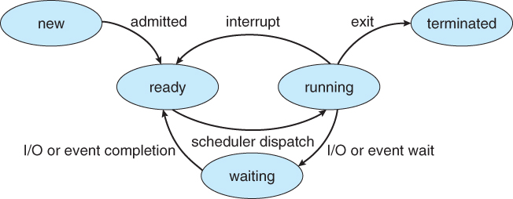
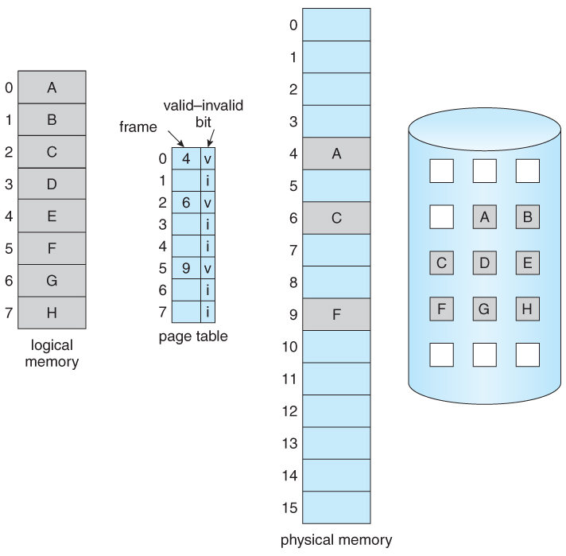
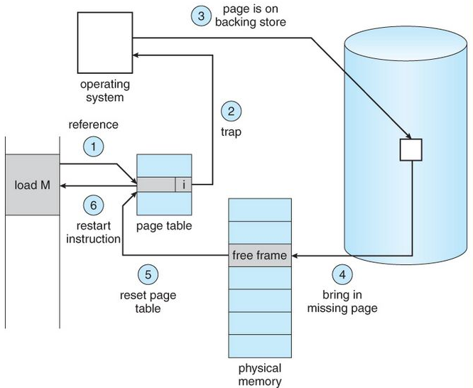

Processes, memory management, and the difference between the things that sound alike.
Static vs. dynamic type checking
Static type checking: types are checked at compile time, so type errors are caught before the program runs. C, Java, and Rust work this way.
Dynamic type checking: types are checked at run time, as values are used. Python and JavaScript work this way. It is more flexible, but the checks cost time during execution.
Process states

The five process states (figure from Silberschatz, Galvin, and Gagne, Operating System Concepts).
A process is new when created, ready when it could run but the CPU is busy, running when it has the CPU, waiting when it is blocked on I/O or an event, and terminated when it exits.
Modern operating systems use preemptive scheduling: the OS can take the CPU away from a running process (the "interrupt" arrow) rather than waiting for it to give up the CPU voluntarily.
The dispatcher is the part of the OS that actually moves a process from ready to running.
Dispatch latency is the time the dispatcher needs to stop one process and start another running: the context switch, the switch to user mode, and the jump to the right instruction. Do not confuse it with response time, which is measured from when a request is submitted until the first response is produced.
Virtual memory
Each process sees its own private address space, called logical (or virtual) memory. The CPU generates logical
addresses, the page table translates them, and the data turns out to live either in physical RAM or on disk.
Using disk to back up RAM in this way is what "virtual memory" means.
Because pages can live on disk, a process's address space can be larger than physical memory.
Pages that were pushed out to disk are brought back into RAM when the process touches them again.
Paging versus segmentation: with segmentation, each segment (code, data, stack, …) must occupy one contiguous region of physical memory, so a large segment can be hard to place and free memory becomes externally fragmented. Paging chops memory into small fixed-size pages, so no contiguous region is ever required and free space is used much better.

Paging with a valid–invalid bit: pages A, C, and F are in RAM, the rest are on disk (figure from Silberschatz, Galvin, and Gagne, Operating System Concepts).
Page fault
A page fault happens when the CPU generates a logical address for a page that is not currently in physical memory. The page table entry is marked invalid, the hardware traps to the OS, and the OS has to fetch the page.
The steps for handling one (the numbering here is independent of the numbers in the figure):
The OS checks the process control block (PCB) to see what kind of reference this was:
if the address is simply invalid, the process is aborted;
if the page is legitimate but just not in memory, continue.
Find a free frame in physical memory. If none is free, choose a victim page to evict; if the victim's dirty bit is set, it must be written back to disk first, so a single fault can cost two disk transfers.
Read the page from disk into that frame.
Update the page table so the entry now points to the frame and is marked valid.
Restart the instruction that caused the fault. It now succeeds.

Handling a page fault (figure from Silberschatz, Galvin, and Gagne, Operating System Concepts).
Internal vs. external fragmentation
Internal fragmentation comes with fixed-size blocks (paging). A process is given whole pages, so the last page is usually only partly used. The wasted space inside allocated blocks is internal fragmentation.
External fragmentation comes with variable-size allocation (segmentation). Over time, free memory is scattered into many small holes. There may be enough free memory in total to satisfy a request, but no single hole is big enough because the free space is not contiguous.
The fix for external fragmentation is compaction: shuffle the allocated regions together so that the free space becomes one large contiguous block.
User mode vs. kernel mode
The CPU has a mode bit: 1 for user mode, 0 for kernel mode.
User mode is where application programs run. Access to system data is restricted and the hardware cannot be touched directly; to do anything privileged, the program has to ask the OS through a system call.
Kernel mode is where the OS runs. Privileged instructions (touching I/O devices, changing page tables, and so on) only work in this mode.
Software pipelining
A compiler technique that overlaps instructions from different iterations of a loop so the processor's pipeline stays full. It is essentially out-of-order execution, except that the reordering is done by the compiler ahead of time rather than by the processor at run time.